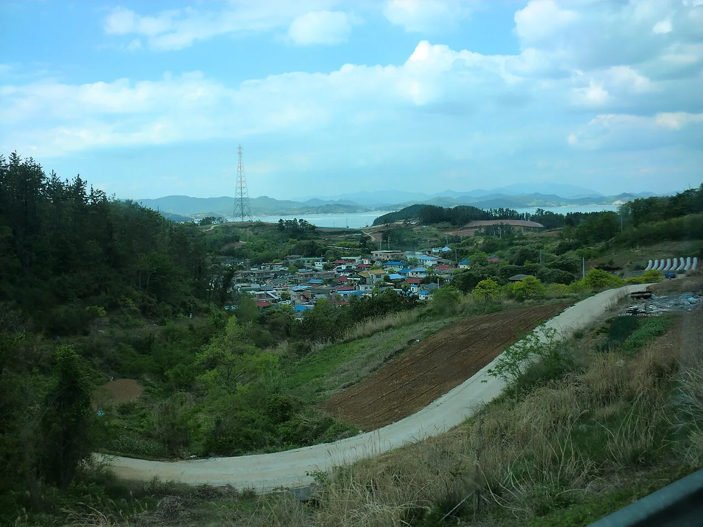
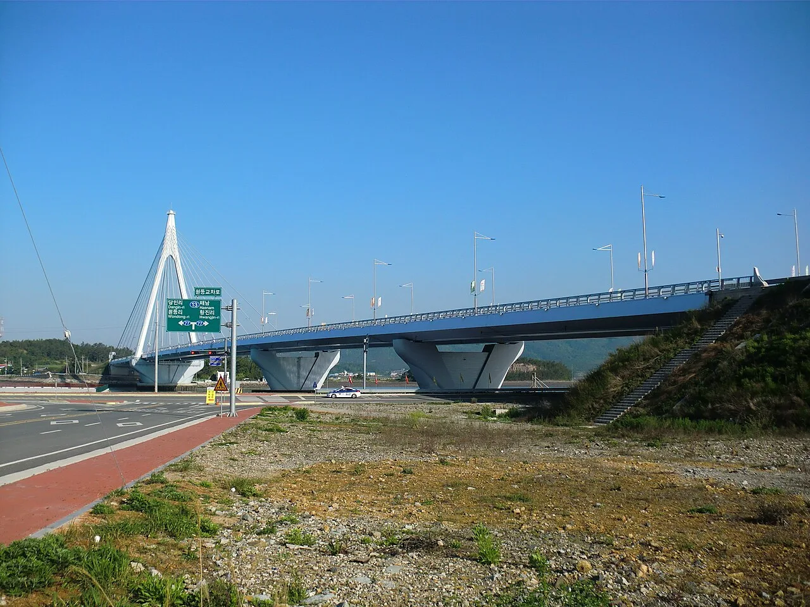
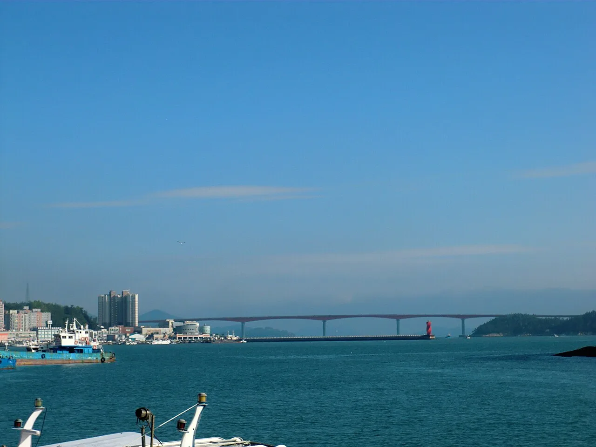
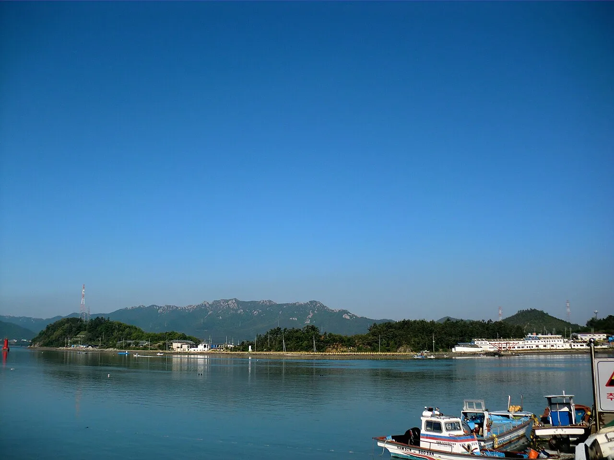
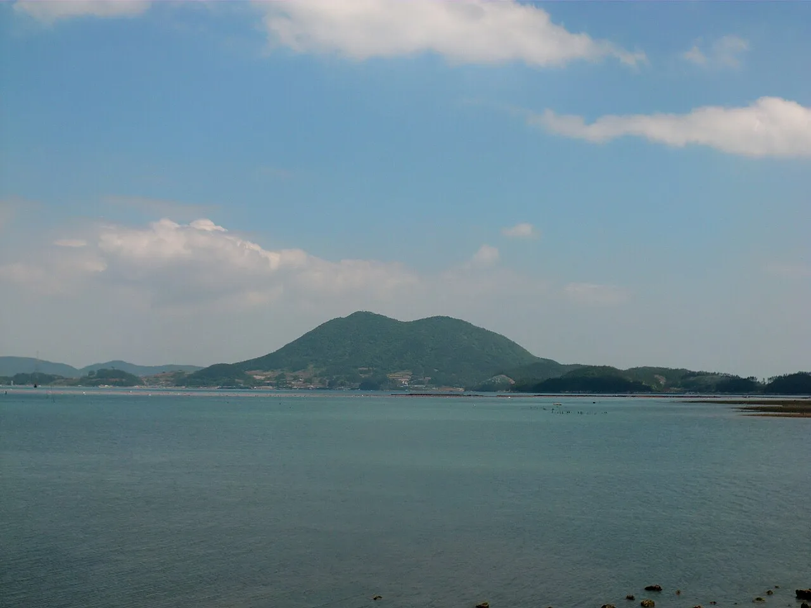
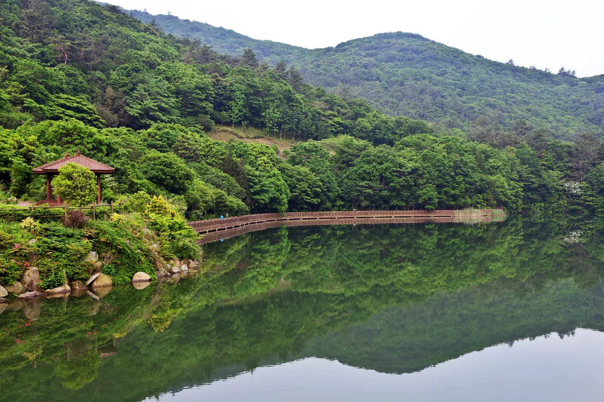
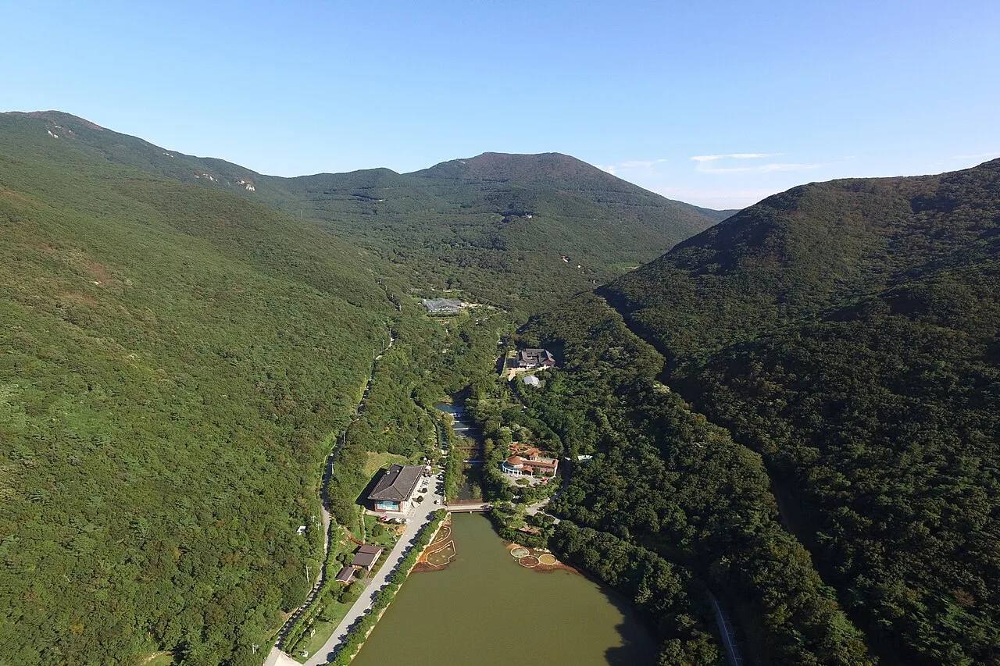

▲ 여름철 신지 명사십리해수욕장. 완만한 경사의 백사장이 해안선을 따라 끝없이 이어진다 ⓒ Wikimedia Commons
1. 모래가 우는 해변, 이름부터 심상치 않다
전남 완도군 신지면의 명사십리해수욕장은 이름 자체가 특이합니다. 모래를 밟을 때 나는 소리가 십 리 밖까지 들린다고 해서 '울모래' 혹은 '명사십리(鳴沙十里)'라는 이름이 붙었다고 전해집니다. 강원도 원산의 명사십리와 한자가 다른, 완도만의 독자적인 이름입니다.
이곳에는 또 다른 사연도 있습니다. 조선 철종의 사촌인 이세보가 왕족이라는 이유만으로 이 백사장에 유배를 왔고, 날마다 모래밭에 주저앉아 손가락으로 망향의 시를 쓰며 울었다는 이야기가 전해집니다. 지금은 여름이면 피서객으로 가득 차는 해변이지만, 그 이름 속에는 이런 사연이 숨어 있습니다.
규모부터 남다릅니다. 백사장 면적은 약 57만㎡, 길이 약 3.8~4km, 폭 150m에 이르는 대형 해변으로, 해수에 포함된 미네랄 등 기능성 성분이 전국에서 가장 풍부한 해변 중 하나로 꼽힙니다. 완만한 경사와 얕은 수심 덕분에 가족 단위 물놀이에도 적합하다는 평이 많습니다.
수질과 환경 관리 수준도 눈에 띕니다. 명사십리해수욕장은 국제 환경교육재단(FEE)의 '파일럿 블루플래그' 인증을 받은 이력이 있는 해변으로, 수질과 안전관리, 환경 프로그램 등에서 국제 기준에 부합한다는 평가를 받은 바 있습니다.
2. 100년 넘은 소나무숲, 여름에도 서늘하다
명사십리를 남해안 최고 해변으로 꼽는 이유 중 하나는 해변 뒤를 감싼 송림입니다. 수령 100년이 넘는 소나무를 비롯해 참나무, 팽나무, 떡갈나무 등 40여 종의 상록수와 단풍나무가 울창한 숲을 이루고 있어, 한여름에도 그늘 아래 삼림욕을 즐기기 좋은 환경을 갖췄습니다.
해변과 숲이 나란히 붙어 있다 보니 동선이 단순합니다. 백사장에서 물놀이를 하다가 더위가 심해지면 몇 걸음만 옮겨 소나무 그늘로 들어가면 됩니다. 야영장과 주차장도 이 송림 구역을 따라 배치돼 있어, 텐트를 치고 낮에는 해변, 밤에는 숲 그늘에서 쉬는 식의 하루 일정이 자연스럽게 짜입니다.

▲ 신지면 일대 야산에서 내려다본 해안 마을과 바다. 명사십리는 이런 낮은 구릉과 바다 사이에 자리한다 ⓒ Wikimedia Commons
3. 완도대교 건너 신지대교까지 — 두 개의 다리를 건너는 드라이브
명사십리로 가려면 다리를 두 번 건너야 합니다. 육지에서 완도읍으로 들어올 때는 해남 화원반도와 완도를 잇는 완도대교(사장교)를 건너고, 완도읍에서 신지도로 들어갈 때는 다시 신지대교를 건너야 합니다. 자가운전 기준으로는 완도대교를 건넌 뒤 13번 국도를 타고 신지대교 방면으로 우회전하면 됩니다.

▲ 완도대교. 육지에서 완도읍으로 들어오는 관문으로, 신지도로 가려면 완도읍을 거쳐 이 다리를 먼저 건너야 한다 ⓒ Wikimedia Commons
완도와 신지도를 잇는 신지대교는 주홍색 상판이 특징인 다리로, 완도타워에서도 야경 명소로 소개될 만큼 완도읍 쪽에서 바라보는 풍경이 좋습니다. 2005년 개통 이전에는 신지도가 배편으로만 오갈 수 있는 섬이었지만, 다리가 놓이면서 완도읍에서 명사십리까지 승용차로 곧장 이동할 수 있게 됐습니다. 다리 하나만 건너면 바로 명사십리 권역으로 들어서는 구조라, 완도읍 숙소에 묵고 낮에만 신지도로 넘어가는 여행자도 많습니다.

▲ 완도와 신지도를 연결하는 신지대교. 사진 왼쪽이 완도, 오른쪽이 신지도 방향이다 ⓒ Wikimedia Commons

▲ 완도 권역의 항구 풍경. 명사십리로 가는 드라이브 코스 곳곳에서 이런 어촌 풍경을 지나게 된다 ⓒ Wikimedia Commons
4. 주차 7개소 2,860면, 야영장까지 — 시설 총정리
명사십리해수욕장은 규모에 걸맞게 편의시설도 큰 편입니다. 주차장이 7개소에 총 2,860면 규모로 마련돼 있고, 화장실 11동, 샤워장 9동, 야영장 4개소가 해변을 따라 배치돼 있습니다. 성수기에도 주차 회전이 비교적 원활한 편이라는 평이 많지만, 피크 시즌 주말에는 여유 있게 도착하는 편이 안전합니다.
| 시설 | 규모 | 비고 |
|---|---|---|
| 주차장 | 7개소, 총 2,860면 | 해변을 따라 분산 배치 |
| 화장실 | 11동 | |
| 샤워장 | 9동 | 피서철 한정 운영 구간 있음 |
| 야영장 | 4개소 | 송림 구역 인접 |
캠핑을 계획한다면 오토캠핑장 예약을 별도로 챙겨야 합니다. 해변 인근에는 카라반과 텐트를 함께 수용하는 민간 오토캠핑장이 여러 곳 운영되고 있으며, 캠핑카라반 20여 동과 텐트 사이트 수십 면 규모를 갖춘 곳도 있습니다. 편의점, 샤워실, 풋살장, 족구장, 캠프파이어 공간 등을 갖춘 곳이 많아 가족 단위 1박 캠핑에 적합합니다.
5. 완도타워 — 신지대교 야경을 내려다보는 전망대
명사십리 여행에서 빠지지 않는 연계 코스가 완도타워입니다. 완도읍 동망산 정상 부근 다도해일출공원에 자리한 76m 높이의 타워로, 전망대는 해발 51.4m에 있습니다. 완도항과 신지대교의 야경은 물론 청산도·보길도·노화도·고금도까지 한눈에 담을 수 있고, 맑은 날에는 제주도와 거문도까지 보인다고 소개됩니다.
| 구분 | 내용 |
|---|---|
| 운영시간 | 동절기(10~5월) 09:00~21:00 / 하절기(6~9월) 09:00~22:00 (마감 30분 전 입장 마감) |
| 입장료(개인) | 성인 2,000원 · 청소년/군인 1,500원 · 어린이 1,000원 |
| 무료 대상 | 완도군민, 6세 이하, 65세 이상, 국가유공자·장애인(신분증 지참) |
| 위치 | 완도군 완도읍 장보고대로 330 |
1층에는 특산품 전시장과 크로마키 포토존, 영상체험관이 있고, 야간에는 경관조명과 함께 매일 레이저쇼가 펼쳐집니다. 신지대교의 야간 조명이 타워 전망대에서 보는 완도읍 야경의 핵심 포인트로 꼽히는 만큼, 낮에는 명사십리에서 물놀이를 하고 저녁 무렵 완도타워로 이동해 야경을 보는 동선을 추천할 만합니다.
전망대 관람 외에 즐길 거리를 더하고 싶다면 인근의 완도타워스카이 짚라인도 함께 고려할 만합니다. 완도타워와 같은 동망산 권역에서 별도로 운영되는 시설로, 다도해 전경을 내려다보며 활강하는 코스가 마련돼 있어 전망대 관람과 묶어 반나절 일정을 짜는 여행자도 있습니다.

▲ 완도 장보고기념관 인근에서 바라본 신지도 방향 풍경. 완도타워에서는 이보다 더 넓은 범위로 다도해가 펼쳐진다 ⓒ Wikimedia Commons
6. 완도수목원 — 국내 유일 난대수목원에서 산림욕
명사십리에서 차로 이동 가능한 또 다른 연계 코스는 국립완도수목원(난대수목원)입니다. 국내에서 유일하게 난대림을 주제로 조성된 수목원으로, 완도 최고봉인 상황봉 능선이 병풍처럼 둘러싸고 있고 수변데크를 따라 걸으면 완도와 신지도를 잇는 주홍색 신지대교도 눈에 들어옵니다.
| 구분 | 내용 |
|---|---|
| 운영시간 | 하절기(3~10월) 09:00~18:00 / 동절기(11~2월) 09:00~17:00 (입장은 종료 1시간 전까지) |
| 입장료 | 어른 2,000원 · 청소년 1,500원 · 어린이 1,000원 |
| 무료 대상 | 7세 이하, 65세 이상, 국가유공자, 장애인 |
| 휴무일 | 매월 첫째 주 월요일(공휴일과 겹치면 다음 비공휴일), 1월 1일, 설·추석 연휴 |
| 주차료 | 소형 3,000원 · 경차 1,500원 · 대형 무료 |

▲ 완도수목원의 수변데크. 저수지를 따라 걷는 산책로에서 울창한 난대림을 감상할 수 있다 ⓒ Wikimedia Commons
겨울에도 산림욕 효과를 체감할 수 있다는 점이 이 수목원의 특징으로 꼽힙니다. 국토 서남단에 위치해 산과 바다가 함께 어우러지는 난대림이 사계절 내내 푸른 편이라, 명사십리의 여름 물놀이와 대비되는 조용한 산책 코스로 묶기 좋습니다.

▲ 위에서 본 완도수목원. 상황봉 능선 사이 계곡을 따라 수목원 시설이 자리한다 ⓒ Wikimedia Commons
7. 자차 여행자를 위한 정리
첫째, 동선은 '해변 낮 · 타워 저녁'으로 짜는 편이 효율적입니다. 명사십리에서 물놀이와 백사장 산책을 마친 뒤, 완도읍으로 되돌아 나와 완도타워에서 신지대교 야경을 내려다보는 순서가 자연스럽습니다.
둘째, 캠핑을 계획한다면 시설을 미리 구분해야 합니다. 해수욕장 관리 야영장 4개소와 민간 오토캠핑장은 운영 주체와 예약 방식이 다르므로, 카라반이나 전기 사이트가 필요하면 민간 오토캠핑장을, 텐트만 챙겨 가볍게 다녀올 계획이면 해변 야영장 쪽을 먼저 알아보는 편이 낫습니다.
셋째, 다리를 두 번 건넌다는 점을 감안해 시간을 넉넉히 잡으십시오. 완도대교와 신지대교 모두 왕복 2차로 수준이라 성수기 주말에는 정체가 생기기도 합니다.
넷째, 완도수목원은 여름 한낮보다 아침이나 늦은 오후에 방문하는 편이 쾌적합니다. 난대림 특성상 습도가 높은 한낮보다 그늘이 길어지는 시간대가 산책하기에 더 좋다는 의견이 많습니다.
정리하면 이렇습니다. 신지 명사십리해수욕장은 4km에 달하는 백사장과 100년 넘은 송림, 두 개의 다리를 건너야 닿는 접근성, 그리고 완도타워·완도수목원으로 이어지는 연계 코스까지 갖춘 남해안 대표 해변입니다. 주차 2,860면이라는 규모만 믿고 안일하게 움직이기보다는, 성수기 동선을 미리 짜두는 편이 하루를 더 여유롭게 만들어 줍니다.